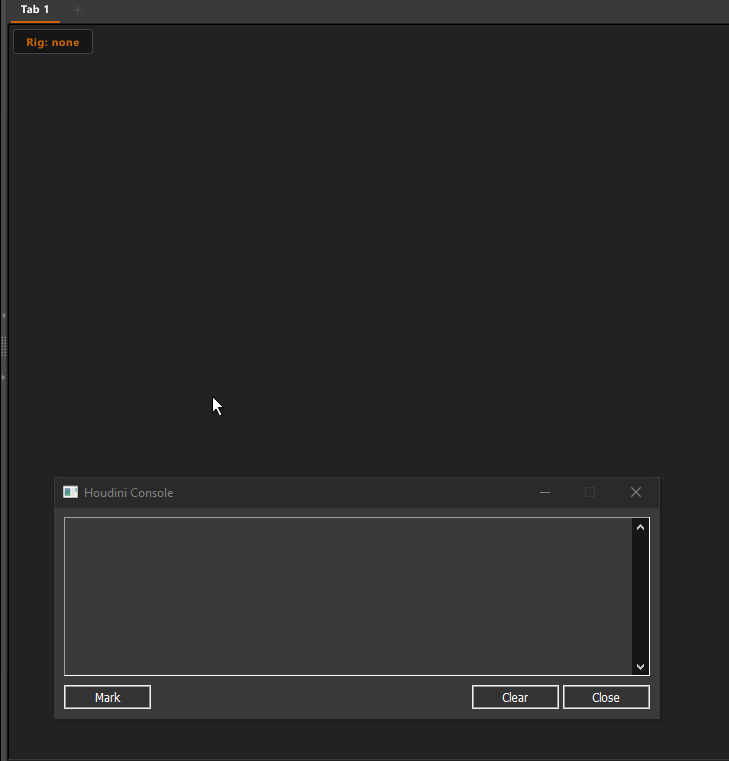

Script API Reference
Full reference for script mode buttons. For an overview see 04 — Script Mode.
Setting up a Script Button
- Right-click a button → Script (works in any mode)
- Right-click the button → Edit Script
- Write your Python code and click Save

Injected Variables
Available automatically when the script runs — no imports needed:
| Variable | Type | Example value | Description |
|---|---|---|---|
mk_rig_path |
str |
/electra_wood.char/Base.rig |
Full APEX rig path of the rig currently selected in the picker menu. Empty string if set to None. |
mk_rig_name |
str |
electra_wood.char |
First path segment of the rig — useful as a short identifier. |
mk_tab_name |
str |
Body |
Name of the tab the button lives on. |
Injected Functions
Also available automatically — all operate on the current rig:
| Function | Description |
|---|---|
mk_get_parm(parm_name) |
Read a graph parm value from the current rig. |
mk_set_parm(parm_name, value, ctrl="") |
Set a graph parm value and update the viewport. |
mk_toggle_parm(parm_name, ctrl="") |
Toggle a graph parm between two float values. |
mk_space_switch(ctrl_name, set_keys=False) |
Trigger a match-and-switch (IK/FK snap) on a space-switch control. |
mk_show_ctrls(ctrl_names) |
Show a list of controls by short name. |
mk_hide_ctrls(ctrl_names) |
Hide a list of controls by short name. |
mk_toggle_visibility(ctrl_names) |
Toggle visibility — any visible → hide all, all hidden → show all. |
mk_select_ctrls(ctrl_names) |
Select controls in the viewport by short name. Accepts a string or list. |
mk_btn_disable(tags) |
Gray out picker buttons that have the given tag(s). They become non-clickable. |
mk_btn_enable(tags) |
Re-enable picker buttons that have the given tag(s). |
mk_btn_hide(tags) |
Hide picker buttons that have the given tag(s). |
mk_btn_show(tags) |
Show picker buttons that have the given tag(s). |
mk_sync_ctrls() |
Force the control manager to process pending visibility changes. Call after show/hide if controls don't update immediately. |
mk_state |
Raw APEX animate state object. For advanced use when the helpers aren't enough. |
Finding the Right Parm and Ctrl Names
Before writing a toggle button you need two things:
1. The parm name — the graph parm that stores the value (e.g. R_arm_ikfk_x)
2. The ctrl name — the abstract controller that drives it (e.g. R_arm_config_ikfkblend)
Step 1 — Print all arm parms
Run this in a script button (or the Houdini Python Shell) to see all parms for a limb:
import apex.ui.statecommandutils as scu
rig = scu.getSceneData(mk_rig_path)
parms = rig.graph_parms
for k, v in sorted(parms.items()):
if "R_arm" in k:
print(k, "=", v)
On Electra this prints (among others):
R_arm_ikfk_x— the blend float (0 = IK, 1 = FK). Usemk_toggle_parm.R_arm_config_ikfk_switch— the match-and-switch trigger. Usemk_space_switch.
Step 2 — Find the ctrl name for a float parm
The ctrl is the short name of the abstract controller that owns the parm. To find it, click the IK/FK slider in the APEX viewport and check the Selected controls list — the controller whose name contains ikfkblend is the one.
You can also print the control map:
import apex.ui.statecommandutils as scu
state_args = {}
scu.sendCommand("getState", state_args)
state = state_args.get("state")
ctrl_mgr = state.control_manager
rig_path = mk_rig_path
for path, ctrl in ctrl_mgr.controls.items():
if "R_arm_config" in path:
print(path)
On Electra the relevant controllers are:
/electra.char/Base.rig/R_arm_config_ikfkblend ← drives R_arm_ikfk_x
/electra.char/Base.rig/R_arm_config_ikfk_switch ← match-and-switch trigger
The short name (without rig path prefix) is what you pass as ctrl.
Example: IK/FK Toggle with Linked Visibility
Toggles the blend and swaps which controls are visible. Replace the parm/ctrl names and control lists with the ones from your character:
fk = ["L_Hand_fk", "L_Lowerarm_Twist_01_fk", "L_Upperarm_fk", "L_Upperarm_Twist_01_fk", "L_Lowerarm_fk"]
ik = ["L_armTarget_ik", "L_armPolevec_ik", "L_armRoot_ik"]
ikfk_parm_name = "L_arm_blendikfkblend_x"
mk_toggle_parm(ikfk_parm_name, ctrl="L_arm_blendikfkblend_abst")
if mk_get_parm(ikfk_parm_name) >= 0.5: # now FK
mk_show_ctrls(fk)
mk_hide_ctrls(ik)
else: # now IK
mk_show_ctrls(ik)
mk_hide_ctrls(fk)
Example: IK/FK Blend Toggle (Electra)
Toggles the arm between IK and FK smoothly (0 ↔ 1):
Example: IK/FK Match-and-Switch (Electra)
Snaps the IK or FK controls to match the current pose, then switches:
Pass set_keys=True to also key the controls at the current frame:
Parm Helper Reference
mk_get_parm(parm_name, default=0.0)
Returns the current value of a graph parm on the active rig.
mk_set_parm(parm_name, value, ctrl="")
Sets a graph parm and pushes the update to the viewport and channel editor.
mk_toggle_parm(parm_name, ctrl="", on=1.0, off=0.0, threshold=0.5)
Reads the current value and flips between on and off.
The ctrl argument is the short name of the abstract controller that drives the parm. It is needed so the channel binding updates correctly and the value doesn't snap back.
mk_space_switch(ctrl_name, set_keys=False)
Triggers a match-and-switch on a space-switch control — snaps the rig pose then switches IK/FK (or any space). set_keys=True also keys the controls at the current frame.
All helpers operate on mk_rig_path automatically — no need to pass the rig path.
mk_select_ctrls(ctrl_names)
Selects one or more controls in the APEX viewport. Accepts a single string or a list.
mk_show_ctrls(ctrl_names) / mk_hide_ctrls(ctrl_names)
Show or hide controls by their short name (without the rig path prefix).
mk_toggle_visibility(ctrl_names)
If any of the listed controls are visible, hides all. If all are hidden, shows all.
Button Tag API
Tags are user-defined strings assigned to picker buttons in the edit panel. Script buttons can use them to gray out or hide groups of buttons at runtime.
mk_btn_disable(tags) / mk_btn_enable(tags)
Gray out (disable) or re-enable buttons by tag. Disabled buttons are non-clickable and shown at reduced opacity.
mk_btn_disable("ik_arm") # single tag
mk_btn_disable(["ik_arm", "ik_leg"]) # multiple tags
mk_btn_enable("fk_arm")
mk_btn_hide(tags) / mk_btn_show(tags)
Hide or show picker buttons by tag.
Example: IK/FK Button State Toggle
Assign tags "ik_arm" and "fk_arm" to the relevant buttons in the edit panel, then use a script button:
if mk_get_parm("L_arm_blendikfkblend_x") >= 0.5: # currently FK
mk_btn_enable("fk_arm")
mk_btn_disable("ik_arm")
else: # currently IK
mk_btn_enable("ik_arm")
mk_btn_disable("fk_arm")
Tags and the disabled/hidden state are saved to the picker JSON file.
Raw snippet (no helpers)
If you need full control:
import apex.ui.statecommandutils as scu
import hou
if not mk_rig_path:
print("No rig selected in picker")
else:
state_args = {}
scu.sendCommand("getState", state_args)
state = state_args.get("state")
rig = scu.getSceneData(mk_rig_path)
parms = rig.graph_parms
current = parms.get("R_arm_ikfk_x", 0.0)
parms.set("R_arm_ikfk_x", 0.0 if current >= 0.5 else 1.0)
if state:
original = list(state.control_manager.controlPaths())
state._selectControls([f"{mk_rig_path}/R_arm_config_ikfkblend"])
state._updatePendingFromBindings()
state.scene.updateEvaluationParms(hou.frame())
state.control_manager.update(state.scene)
state.updateChannelPrimsFromParmComponents(components=["x"])
state.pushChannels()
state.scene_viewer.curViewport().draw()
state._selectControls(original)
Example: Select All Controls on Current Rig
import apex.ui.statecommandutils as scu
if mk_rig_path:
ctrl_mgr = scu.getSceneControlManager()
all_ctrls = [p for p in ctrl_mgr.controls.keys() if p.startswith(mk_rig_path)]
scu.sendCommand("selectControls", {
"controls": all_ctrls,
"controls_in_tree_format": False,
})
Example: Tab-Specific Logic
Notes
mk_rig_pathis empty when the rig menu is set to None. All helpers will print a warning and do nothing if no rig is selected.- The script runs in a restricted namespace — only the injected variables and standard Python/Houdini imports are available. Use
importnormally for anything else (hou,apex,scu, etc.). rig.graph_parmsis a live APEX dict —.set()changes are immediate.
← Script Mode · Edit Mode →